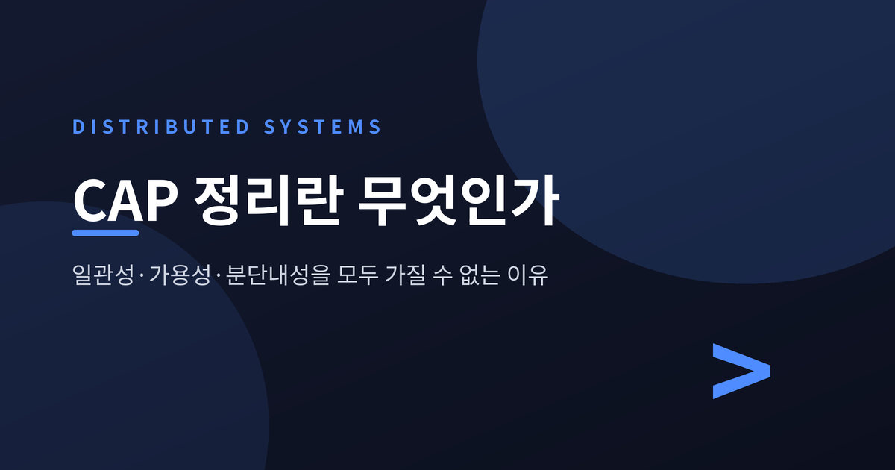
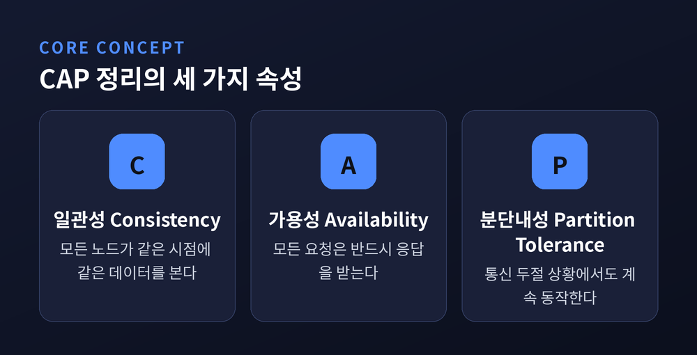
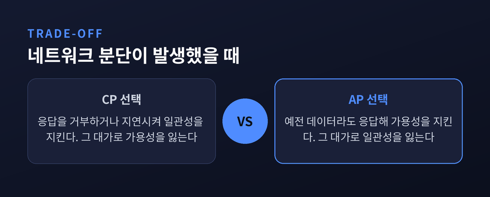
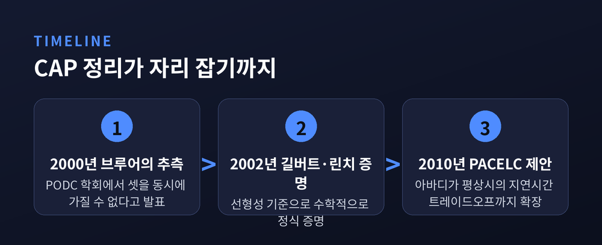
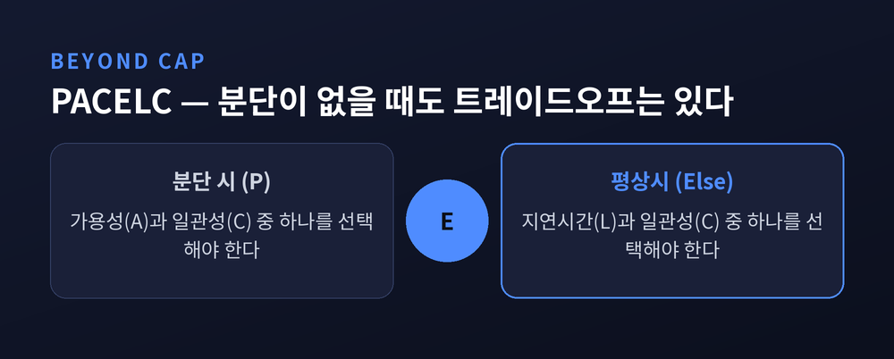
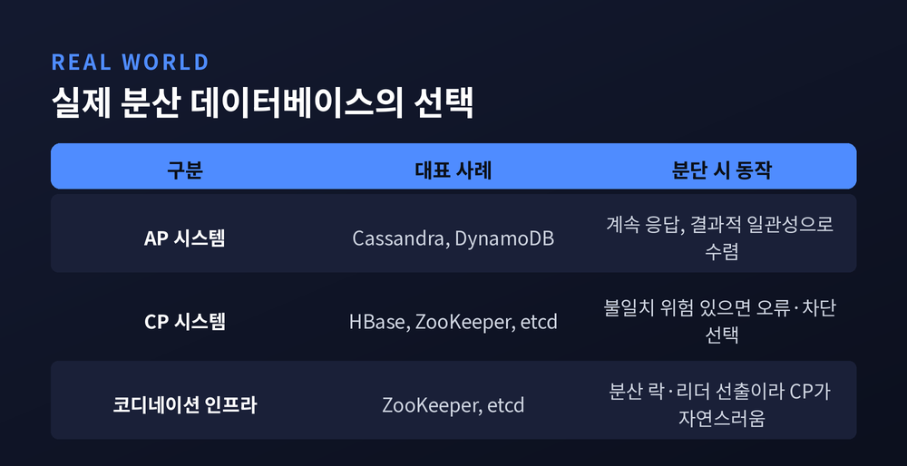

오늘은 분산 시스템을 설계할 때 반드시 마주치는 CAP 정리에 대해 이야기해 보려 합니다. 여러 대의 서버가 데이터를 나눠 갖는 순간, 일관성과 가용성과 분단내성 중 하나는 포기해야 한다는 것이 이 정리의 결론입니다. 왜 그런 선택이 강제되는지, 실제 데이터베이스들은 무엇을 택했는지 차례로 정리해 보겠습니다.
CAP 정리는 컴퓨터과학자 에릭 브루어가 2000년 PODC 학회 기조연설에서 처음 제시한 개념입니다. 그래서 "브루어의 정리"라고도 부릅니다. 분산 데이터 저장소는 다음 세 가지 속성을 동시에 전부 만족할 수 없고, 그중 둘만 만족할 수 있다는 것이 핵심입니다.
일관성(Consistency)은 모든 노드가 같은 시점에 같은 데이터를 본다는 뜻입니다. 더 정확히 말하면, 모든 읽기 요청은 가장 최근 쓰기 결과 또는 오류를 돌려줘야 합니다. 가용성(Availability)은 장애가 없는 노드로 들어온 모든 요청이 반드시 응답을 받는다는 뜻입니다. 최신 데이터가 아니어도 상관없습니다. 분단내성(Partition Tolerance)은 노드 사이의 통신이 끊기거나 지연되는 상황에서도 시스템이 계속 동작한다는 뜻입니다.
이 세 속성의 조합으로 시스템을 세 가지로 분류합니다. 가용성과 분단내성을 택하고 일관성을 희생하면 AP, 일관성과 분단내성을 택하고 가용성을 희생하면 CP, 일관성과 가용성을 택하고 분단내성을 희생하면 CA입니다.

예전엔 서버 한 대로 충분했습니다. 지금은 데이터가 여러 대륙의 데이터센터에 흩어져 있습니다. 이렇게 노드가 여러 대로 나뉜 순간, 네트워크는 물리적으로 100퍼센트 신뢰할 수 없는 존재가 됩니다. 케이블이 끊기거나 라우터가 죽거나 지연이 길어지는 일은 언젠가 반드시 일어납니다.
그래서 대규모 분산 시스템에서 분단내성은 사실상 선택의 대상이 아니라 전제조건에 가깝습니다. 진짜 선택은 "분단이 발생했을 때 일관성을 포기할 것인가, 가용성을 포기할 것인가"로 좁혀집니다.
상황을 구체적으로 그려보면 이렇습니다. 노드 그룹이 통신 두절로 둘로 갈라졌다고 가정해 보겠습니다. 한쪽 그룹에 쓰기 요청이 들어옵니다. 그 내용을 반대쪽 그룹에 즉시 전파할 방법은 없습니다. 통신이 끊겼기 때문입니다. 이때 반대쪽 그룹이 "그래도 응답은 하겠다"며 예전 데이터를 돌려주면 가용성은 지켰지만 일관성이 깨집니다. 반대로 "최신 데이터인지 확신할 수 없으니 응답을 거부하겠다"고 하면 일관성은 지켰지만 가용성이 깨집니다.
분단 상황에서 일관성과 가용성을 동시에 만족시킬 방법은 논리적으로 없습니다. 이것이 CAP 정리가 말하는 트레이드오프의 본질입니다.

브루어의 2000년 발표는 엄밀히 말해 "추측"이었습니다. 이를 수학적으로 증명해 정식 정리로 세운 사람은 세스 길버트와 낸시 린치입니다. 두 사람은 2002년 ACM SIGACT News에 발표한 논문에서 브루어의 주장을 형식화했습니다.
이 증명에서 사용한 일관성 기준은 선형성(linearizability)입니다. 원자적 객체를 다루는 강한 기준으로, 흔히 말하는 인과적 일관성보다도 더 엄격한 조건입니다. 증명은 두 갈래로 나뉩니다. 시계가 없는 비동기 네트워크에서는 강한 형태의 불가능성 결과가 성립하고, 부분적으로 동기화된 네트워크에서는 상대적으로 약한 형태의 결과가 성립합니다. 두 경우 모두 결론은 같습니다. 셋 중 둘만 가질 수 있다는 것입니다.
CAP 정리는 이후 분산 컴퓨팅의 3대 불가능성 증명 중 하나로 자리 잡았습니다. 두 장군 문제, FLP 불가능성 결과와 나란히 언급되는 이유입니다.

CAP 정리는 분단이 발생했을 때만 다룹니다. 그런데 실무에서는 분단이 없는 평상시에도 일관성과 응답 속도 사이의 갈등이 계속됩니다. 이 빈틈을 짚은 사람이 대니얼 아바디입니다. 그는 2010년 CAP을 확장한 PACELC라는 개념을 제안했습니다.
PACELC의 논리는 이렇습니다. 분단(Partition)이 발생하면 가용성(Availability)과 일관성(Consistency) 중 하나를 선택해야 합니다. 여기까지는 CAP과 같습니다. 하지만 그렇지 않은 평상시(Else)에도, 지연시간(Latency)과 일관성(Consistency) 중 하나를 선택해야 한다는 것이 PACELC의 추가 통찰입니다.
데이터를 복제하는 순간부터 이 트레이드오프는 시작됩니다. 복제본 전체의 동기화를 기다리면 일관성은 높아지지만 응답은 느려집니다. 동기화를 기다리지 않고 바로 응답하면 빨라지지만 일관성은 낮아집니다. "일관성이나 가용성을 포기하는 진짜 이유는 결국 지연시간 때문"이라는 것이 아바디의 관찰입니다.

이론은 실제 제품에서 각기 다른 얼굴로 나타납니다.
카산드라(Cassandra)는 가용성과 분단내성을 우선하는 AP 시스템입니다. 결과적 일관성(eventual consistency)을 제공하며, 네트워크가 갈라져도 쓰기와 읽기 요청을 계속 받아들입니다. 그 대가로 오래된 데이터를 돌려줄 수 있습니다. 다만 카산드라의 일관성은 완전한 이분법이 아닙니다. 읽기와 쓰기마다 일관성 수준을 조정할 수 있는 다이얼 방식이어서, 설정에 따라 CP처럼 동작하게 만들 수도 있습니다. 다이나모DB(DynamoDB) 역시 AP 계열의 대표 사례로 꼽힙니다.
반대편에는 CP 시스템이 있습니다. HBase가 대표적입니다. 일관성을 우선하기 때문에, 분단이 발생하면 불일치 가능성이 있는 데이터를 돌려주는 대신 오류를 내거나 요청을 막습니다. HBase는 내부적으로 주키퍼(ZooKeeper)에 의존합니다. 주키퍼와 etcd는 애초에 범용 데이터베이스가 아니라 분산 락, 리더 선출, 서비스 디스커버리를 담당하는 코디네이션 인프라입니다. 이 역할의 특성상 CP를 택하는 편이 자연스럽습니다. 정확한 상태 하나만을 신뢰할 수 있어야 락이 락으로서 의미가 있기 때문입니다.
몽고DB(MongoDB)처럼 writeConcern: majority 같은 옵션으로 과반수 복제본의 확인을 받은 뒤에만 쓰기를 성공으로 간주하는 구성도 있습니다. 금융이나 재고 관리처럼 정확성이 중요한 시스템에 어울리는 선택입니다.

여기서 자연스럽게 궁금해집니다. CA 시스템은 왜 잘 언급되지 않을까요.
일부 자료는 전통적인 단일 노드 관계형 데이터베이스를 CA로 분류합니다. 하지만 다수 자료는 다른 입장입니다. 분산 시스템에서 분단은 피할 수 없는 현실이므로, 진정한 의미의 CA는 사실상 불가능하거나 의미가 매우 제한적이라는 것입니다. CA는 "분단이 아예 없다고 가정할 수 있는 특수한 상황" — 이를테면 단일 데이터센터, 단일 노드 — 에서만 성립하는 이론적 범주에 가깝습니다.
브루어 본인도 훗날 해석을 조금 다듬었다고 알려져 있습니다. 현대적 CAP의 목표는 셋 중 둘을 딱 잘라 고르는 것이 아니라, 애플리케이션 특성에 맞게 일관성과 가용성의 조합을 최대한 끌어올리는 것이라는 취지입니다. 이 부분은 2차 자료에서 확인된 재해석이라 단정하기보다는 참고 정도로 받아들이는 편이 안전합니다.
실무에서 CAP을 마주하는 방식도 비슷합니다. 이론처럼 딱 두 개만 고르는 것이 아니라, 서비스마다 감내할 수 있는 지연시간과 데이터 신선도의 균형점을 계속 조정하는 것이 실제 설계 작업입니다. 결제처럼 틀리면 안 되는 영역은 CP 쪽으로, 추천 피드처럼 조금 오래된 데이터도 괜찮은 영역은 AP 쪽으로 기우는 식입니다.
정리하면 이렇습니다. 분산 시스템은 네트워크 분단이라는 피할 수 없는 현실 앞에서, 일관성과 가용성 중 하나를 내려놓아야 합니다. "완벽한 시스템은 없고, 있는 것은 트레이드오프뿐이다" — CAP 정리가 남긴 메시지는 결국 이 한 줄로 요약됩니다.
CAP이 분산 시스템의 전부를 설명하느냐고 물으신다면, 그렇지는 않다고 답하겠습니다. 다만 어떤 데이터베이스를 고르든, 그 선택의 배경에는 이 정리가 놓여 있다는 것만은 분명합니다.